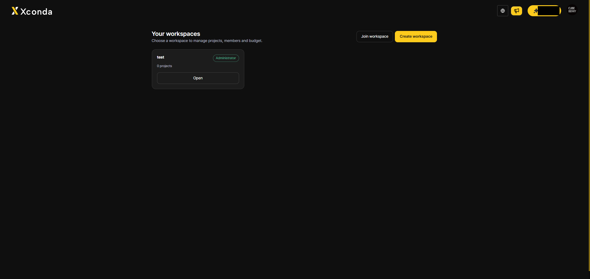
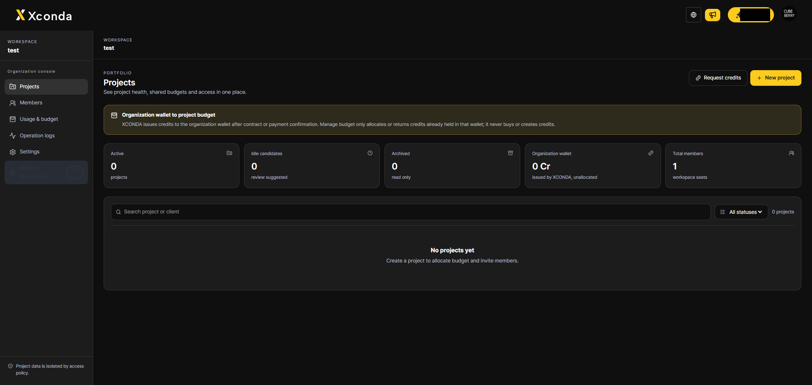
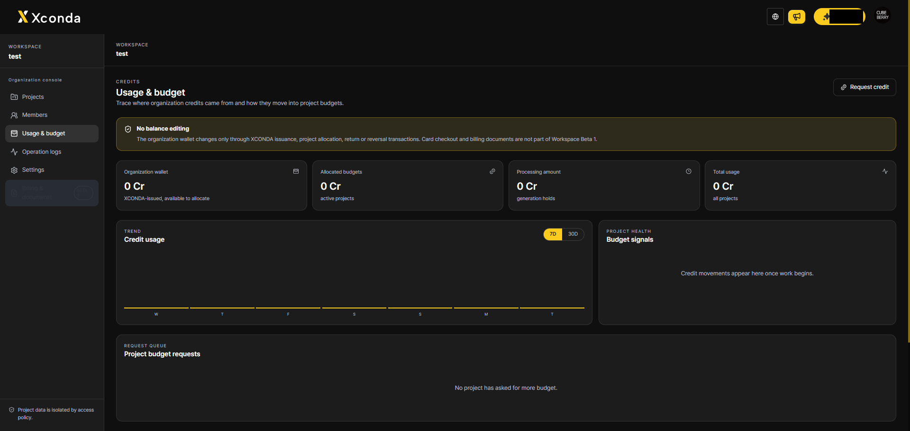

- ワークスペース = チームが一緒に使う部屋
- プロジェクト = 仕事1つのまとまり
- メンバー = 一緒に仕事をするチームの人
- クレジット = Xcondaで使うトークン。使うたびに減ります。
- 組織ウォレット = 会社全体のクレジットを入れておく大きな財布
- 予算 = 仕事ごとに分けたクレジットの量
- 管理者 = 部屋や仕事を担当して決めることができる人
- Reuse = すでに作ったものをもう一度使って、続けて作ること
- ベータ (Beta) = まだ試している段階。完成したものではありません。
1. ワークスペースとは
ワークスペースはチームが一緒に使う部屋です。
1人で使うときとは違います。チームの仕事、メンバー、クレジットを1か所で見ることができます。
相談ページにもこう書いてあります。チームプロジェクト・メンバー・クレジットを1か所で管理。
最初の画面にはこう出ます。Choose a workspace to manage projects, members and budget.
意味はこうです。「仕事、メンバー、予算を見る部屋を選んでください。」
| ページに出た言葉 | やさしい意味 |
|---|---|
| チームプロジェクト作成・共有 | チームの仕事を作ります。作ったものはメンバーと分けて見ます。 |
| プロジェクトの進み具合を確認 | 仕事がどれだけ進んだか、ひと目で見ます。 |
| メンバーを自由に調整 | メンバーを入れたり外したりできます。いつでも変えることができます。 |
| メンバーごとにクレジットを支給 | クレジットを分けて渡します。誰がどれだけ使ったかも簡単に見ます。 |
| できること | やさしい説明 |
|---|---|
| チームプロジェクトを作る · メンバーを呼ぶ | 仕事のまとまりを作ります。そしてメンバーを呼びます。部屋に呼ぶことと仕事に入れることは違います。別々にします。6章を見てください。 |
| プロジェクトの予算を分ける | 大きな財布にあるクレジットを仕事ごとに分けます。作ることは、分けて受けた量の中でだけできます。予算を分けてもクレジットは新しく増えません。5章と7章を見てください。 |
| どれだけ使ったか見る | Usage & budget 画面で見ます。クレジットがどこから来たか見ることができます。どの仕事へ行ったかも見ることができます。 |
| 記録を見る · 設定を変える | Operation logsで大切な仕事の記録を見ます。Settingsで会社名、言語、時間、ロゴ、基本の色を変えます。 |
| 成果物を分ける · Reuse | 作った成果物を見ることができます。ダウンロードすることもできます。写真で Reuse を押すと、続けて作ることができます。ただし、Reuse は同じ仕事の中だけでできます。他の仕事へ持っていくことはできません。外にリンクで開くこともできません。Beta 1ではできません。10章を見てください。 |
Project data is isolated by access policy. と出ます。意味はこうです。「仕事ごとに見ることができる人が決まっています。誰でも全部見ることはできません。」
Workspaceを押すと部屋へ行きます。 · 上部の個人クレジットの数字は黒い箱で隠しました。人に見せてはいけないからです.2. 始める — まず相談を申し込みます
すぐに登録して使うものではありません。まず相談を申し込みます。
相談ページで文を書いて送ります。すると返事のメールが来ます。営業日を基準に2日以内に来ます。
営業日は会社が仕事をする日です。週末は数えません。
ページのタイトルは Workspace Consultation です。送るボタンは Request consultation です。

2-1. 申し込む前に準備すること
- 会社名を準備してください。
- 担当者の名前を準備してください。
- 仕事のメールを準備してください。返事は仕事のメールに来ます。必ず見ることができるメールを書いてください。
- 何人で使うか決めてください。この欄は必ず埋めなければいけません。
- いつから使いたいか決めておいてください。なくても申し込むことができます。
- 聞きたいことを書いておいてください。なぜ使うか書くと良いです。どんな仕事をするか書くと良いです。何が必要か書くと良いです。この欄は空でも大丈夫です。
- 個人情報を使うことに同意しなければいけません。同意にチェックを入れないと送ることができません。
2-2. 申込書に書くこと
| 欄の名前 | 必ず書きますか? | どう書きますか? |
|---|---|---|
| 会社名 | 必須 * | 自分で書きます。欄には 회사명 입력 と出ます。 |
| 担当者名 | 必須 * | 自分で書きます。欄には 이름 입력 と出ます。 |
| 仕事のメール | 必須 * | 自分で書きます。例: [email protected]。返事がここに来ます。間違えて書いていないか必ず見てください。 |
| 連絡先 | 選択 | 自分で書きます。例: 010-0000-0000。空でも大丈夫です。 |
| 予想使用人数 | 必須 * | リストから選びます。欄には 선택 と出ます。申込画面で直接見てください。 |
| 希望導入時期 | 選択 | リストから選びます。使いたい時期を選べば大丈夫です。 |
| 問い合わせ内容 | 選択 | 自分で書きます。欄には 사용 목적, 주요 작업 유형, 필요 기능 등 と出ます。 |
2-3. 個人情報の同意 — 必ずチェックが必要です
申込書の下に [必須] 個人情報の収集・利用の同意 があります。読んでチェックを入れてください。
| 区分 | ページに出た言葉 |
|---|---|
| 何を持っていきますか? | 会社名、担当者名、仕事のメール、連絡先 |
| なぜ使いますか? | ワークスペース導入の相談と返信。つまり、相談して返事を送るために使います。 |
| どれだけ置きますか? | 個人情報は相談が終わった1年後に削除します。 |
2-4. 送った後にすること
- Request consultation ボタンを押します。
- 待ってください。営業日を基準に2日以内に返事のメールが来ます。
- メールが来なければ、まず迷惑メール箱を見てください。その次に、メールを正しく書いたか見てください。
- お金やアカウントについて聞きたいことがあれば、カスタマーセンターに聞いてください。
3. 入る — 選ぶ、参加する、作る
ログインしてください。そして xconda.ai/workspace へ行ってください。Your workspaces 画面が開きます。
意味は「私のワークスペース」です。私が入った部屋のリストです。
3-1. リストから開く
- 部屋1つがカード1つで出ます。
- カードには部屋の名前が出ます。私の役割も出ます。プロジェクトの数も出ます。
- 例:
Administratorは管理者です。0 projectsはプロジェクト0個です。 - カードの
Openボタンを押してください。その部屋の管理画面に入ります。最初はProjects画面が開きます。 - 右上にはボタンが2つあります。
Join workspaceとCreate workspaceです。

Your workspaces 画面です。部屋のカードが見えます。Open ボタンも見えます。Join workspace と Create workspace ボタンも見えます。 · 上部の個人クレジットの数字は黒い箱で隠しました.3-2. 新しい部屋を作る — Create workspace
Create workspaceボタンを押します。Create a workspace欄が開きます。- そこには
You become its first administrator.と出ます。意味は「作った人が最初の管理者になります」です。 Organization nameに会社名を書きます。Createボタンを押します。部屋が作られます。- 作った記録は
Operation logsに残ります。Organization createdと出ます。8章を見てください。

Create a workspace 画面です。Organization name を書きます。そして Create を押します。 · 上部の個人クレジットの数字は黒い箱で隠しました.3-3. すでにある部屋に入る — Join workspace
Join workspace ボタンがあります。すでにある部屋に入るときに押します。メンバーを呼ぶ方法は6章を見てください。
4. 管理画面をひと目で見る
部屋を開くと左にメニューがいつも出ます。名前は Organization console です。会社の管理メニューだと思えば大丈夫です。
一番上には今入った部屋の名前が出ます。
| メニュー (画面の名前) | アドレス | やさしい説明 |
|---|---|---|
Projects | /workspace/projects | 仕事のリストを見ます。仕事の状態も見ます。分けた予算も見ます。誰が見ることができるかも見ます。5章です。 |
Members | /workspace/members | メンバーを呼びます。役割を決めます。6章です。 |
Usage & budget | /workspace/usage | クレジットがどこから来たか見ます。どこへ行ったかも見ます。7章です。 |
Operation logs | /workspace/logs | 大切な仕事を誰がしたか見ます。止められたリクエストも見ます。予算を変えたことも見ます。8章です。 |
Settings | /workspace/settings | 部屋の名前、言語、時間、ロゴ、基本の色を決めます。9章です。 |
Billing & documents BETA | — | まだ押すことができません。オフになっています。請求書とお金を払う方法は Beta 2 で出ます。9章を見てください。 |
左下には Project data is isolated by access policy. といつも出ます。意味はこうです。「仕事ごとに見ることができる人が決まっています。」
部屋に入ったからといって、すべての仕事を見ることはできません。仕事ごとに別々に入れてもらわなければいけません。6章を見てください。
5. Projects — プロジェクトを見る・作る
Projects 画面にはこう出ます。See project health, shared budgets and access in one place.
意味はこうです。「仕事の状態、分けた予算、誰が見ることができるかを1か所で見てください。」
5-1. 上にあるカード5つ
| カード (画面の名前) | やさしい意味 |
|---|---|
Active | 今している仕事の数です。 |
Idle candidates | 一度見なければいけない仕事の数です。下に review suggested と出ます。 |
Archived | 終わってしまっておいた仕事の数です。read only と出ます。見ることだけできます。変えることはできません。 |
Organization wallet | 大きな財布に残ったクレジットです。単位は Cr です。issued by XCONDA, unallocated と出ます。意味はこうです。「XCONDAが入れてくれました。まだどの仕事にも分けていません。」 |
Total members | メンバー全体の数です。下には workspace seats と出ます。 |
5-2. 一番大切なルール — 大きな財布から仕事へ分ける
Organization wallet to project budget画面にこう出ます。
XCONDA issues credits to the organization wallet after contract or payment confirmation. Manage budget only allocates or returns credits already held in that wallet; it never buys or creates credits.やさしく言うとこうです。契約が終わります。またはお金を払ったことが確認されます。すると XCONDA が大きな財布にクレジットを入れてくれます。予算を分けることは、その財布にすでにあるものだけを動かします。仕事へ送るか、また持ってくるだけです。クレジットを買いません。新しく作ることもしません。

Projects 画面です。上にカード5つが見えます。大きな財布の案内も見えます。 · 上部の個人クレジットの数字は黒い箱で隠しました.5-3. 仕事を探す
- 検索欄
Search project or clientに仕事の名前を書いてください。お客様の名前を書いても大丈夫です。 All statusesを押してください。状態ごとに選んで見ることができます。右に全体の仕事の数が出ます。- 仕事が1つもなければ
No projects yetと出ます。下にはCreate a project to allocate budget and invite members.と出ます。意味はこうです。「仕事を作ると予算を分けてメンバーを呼ぶことができます。」 - 右上にはボタンが2つあります。
Request creditsはクレジットをもっとほしいときに押します。+ New projectは新しい仕事を作るときに押します。
5-4. 新しい仕事を作る — + New project → Create project
+ New project を押すと Create project ウィンドウが開きます。そこには Allocate existing organization-wallet credits and assign workspace members. と出ます。意味はこうです。「大きな財布にあるクレジットを分けてください。そしてメンバーをこの仕事に入れてください。」
| 欄 (画面の名前) | 何を書きますか? |
|---|---|
Project name | 仕事の名前です。例として e.g. Global Brand Film が出ます。 |
Client | お客様の名前です。例として e.g. Northstar Pictures が出ます。 |
Initial budget | 最初に分けてあげるクレジットの量です。大きな財布にある分だけ分けることができます。 |
Members and project roles | この仕事に入れるメンバーです。Search existing members から探します。すでに部屋にいるメンバーの中から探します。作った人は Project admin (you) と出ます。意味は「私がこの仕事の管理者」です。 |
- ウィンドウの下には
Organization wallet available: ○○ Cr · Project creation does not issue new credits.と出ます。意味はこうです。「大きな財布に ○○ Cr あります。仕事を作っても新しいクレジットは増えません。」 - やめるには
Cancelを押してください。作るにはCreate projectを押してください。

Create project ウィンドウです。Project name、Client、Initial budget、Members and project roles 欄が見えます。 · メンバーのメールと上部の個人クレジットの数字は黒い箱で隠しました.6. Members — メンバーと役割
Members 画面にはこう出ます。Workspace invitation and project assignment are managed separately.
意味はこうです。「部屋に呼ぶことと仕事に入れることは別々にします。」部屋に入ったからといって、すべての仕事に自動で入るわけではありません。
6-1. 役割は2つに分かれます
Two separate role scopesWorkspace: organization admin or member. Project: project admin or project member. Server-side policy remains the source of truth.やさしく言うとこうです。役割は2つの層に分かれます。1つ目は部屋での役割です。管理者かメンバーです。2つ目は仕事での役割です。その仕事の管理者か、その仕事のメンバーです。最後に決めるのはサーバーのルールです。
| どこの役割ですか? | 役割 (画面の名前) | どこで決めますか? |
|---|---|---|
| 部屋 (ワークスペース) | Organization admin / メンバー | Members 画面の Role 欄で決めます。 |
| 仕事 (プロジェクト) | Project admin / Project member | 仕事を作るときに決めます。Members and project roles で決めます。 |
Settings 画面にも同じ言葉が出ます。Beta 1 には役割を決める別の画面はありません。それでも部屋と仕事の境界はすべてのリクエストで守られます。
部屋の管理者は部屋の中のすべての仕事を見ることができます。予算を分けたり、また持ってきたりできます。メンバーを管理できます。仕事をしまっておいたり、また出したりできます。
しかし他の人が作った仕事で直接作るには、その仕事の役割が別に必要です。Reuse をするときも同じです。
反対に、仕事を新しく作った人は、その仕事の管理者になります。仕事を作るウィンドウに
Project admin (you) と出るのがその意味です。6-2. メンバーリストで見ることができるもの
| 欄 (画面の名前) | やさしい意味 |
|---|---|
Member | メンバーの名前とメールです。 |
Role | 部屋での役割です。例の画面には Organization admin と出ます。 |
Workspace status | 今部屋で活動中か見ます。例: Active は活動中です。 |
Assigned projects | 入れてあげた仕事です。なければ Not assigned と出ます。意味は「まだ入れた仕事がありません」です。 |
Monthly usage | 今月使ったクレジットです。単位は Cr です。 |
Access control | 入ることができるか決める欄です。例の画面には Active と出ます。 |

Members 画面です。メンバーの表が見えます。役割の案内も見えます。 · メンバーのメールと上部の個人クレジットの数字は黒い箱で隠しました.6-3. メンバーを呼ぶ — Invite member
Members画面の右上のInvite memberボタンを押してください。- 相談ページにはメールで呼ぶと出ます。
- 呼ぶときは2つを先に決めてください。仕事のメールが合っているか見てください。そして呼んだ後、どの仕事に入れるか決めてください。部屋に呼ぶことと仕事に入れることは違います。
7. Usage & budget — どれだけ使ったか見る
Usage & budget 画面にはこう出ます。Trace where organization credits came from and how they move into project budgets.
意味はこうです。「クレジットがどこから来たか見てください。どの仕事へ行ったかも見てください。」右上のボタンは Request credit です。
7-1. 残りの量を直接直すことはできません
No balance editingThe organization wallet changes only through XCONDA issuance, project allocation, return or reversal transactions. Card checkout and billing documents are not part of Workspace Beta 1.やさしく言うとこうです。大きな財布の量は手で直すことはできません。変わるときは決まったときだけです。XCONDAが入れてくれるときに変わります。仕事へ分けるときに変わります。また持ってくるときに変わります。間違えたものを元に戻すときに変わります。カードでお金を払うことは Beta 1 ではできません。請求書も Beta 1 ではできません。
7-2. 上にあるカード4つ
| カード (画面の名前) | やさしい意味 |
|---|---|
Organization wallet | 大きな財布に残ったクレジットです。XCONDA-issued, available to allocate と出ます。意味はこうです。「XCONDAが入れてくれました。仕事へ分けることができます。」 |
Allocated budgets | 仕事に分けてあげたクレジットを全部合わせたものです。今している仕事を基準にします。 |
Processing amount | 今作っていて少しの間押さえられているクレジットです。画面には generation holds と出ます。 |
Total usage | 今まで使ったクレジットを全部合わせたものです。すべての仕事を基準にします。 |
7-3. グラフ、信号、もっとほしいというリクエスト
Credit usage— どれだけ使ったかグラフ。 使った量がどう変わったか見ます。7Dは7日です。30Dは30日です。ボタンで変えます。Budget signals— 予算の信号。 仕事ごとに予算が大丈夫か教えてくれる場所です。まだ仕事が始まっていなければCredit movements appear here once work begins.と出ます。意味はこうです。「仕事が始まるとクレジットの動きがここに出ます。」Project budget requests— もっとほしいというリクエストのリスト。 仕事で予算をもっとほしいと言うと、ここにたまります。なければNo project has asked for more budget.と出ます。意味は「もっとほしいと言った仕事がありません」です。- 予算が足りなければ。 プロジェクトの予算が足りなければ、もっとほしいと言うことができます。CubeBerry の管理者がクレジットを支給します。

Usage & budget 画面です。カード4つが見えます。Credit usage、Budget signals、Project budget requests も見えます。 · 上部の個人クレジットの数字は黒い箱で隠しました.8. Operation logs — 誰が何をしたか見る
Operation logs 画面にはこう出ます。Review sensitive actions, blocked requests and budget changes.
意味はこうです。「大切な仕事、止められたリクエスト、予算を変えたことを見てください。」後で確認できるように書いておく記録です。
- 検索欄は
Search actor, action or targetです。1人の人、1つの仕事、対象を入れて探します。 - 記録は表で出ます。欄は5つです。
Timeは時間です。Actorはした人です。Actionはした仕事です。Targetは対象です。Resultは結果です。 - 例の画面には部屋を作った記録があります。した仕事は
Organization createdです。結果はSuccessです。Success はうまくいったという意味です。時間には日付と時刻が一緒に出ます。 - 右上の
PDF export, Beta 2ボタンはまだ押すことができません。PDFでダウンロードすることは Beta 1 ではできません。

Operation logs 画面です。Time、Actor、Action、Target、Result 表が見えます。 · 1人の人のID、対象のID、上部の個人クレジットの数字は黒い箱で隠しました.9. Settings — 基本設定を変える
Settings 画面にはこう出ます。Workspace identity settings. Billing and documents remain in Beta 2.
意味はこうです。「部屋の基本情報を決める場所です。請求と文書は Beta 2 にあります。」
9-1. 部屋の情報 — Workspace profile
| 欄 (画面の名前) | やさしい説明 |
|---|---|
Organization name | 会社名です。部屋のリストと管理画面にこの名前が出ます。 |
Default language | 基本の言語です。例の画面には English が選ばれています。 |
Time zone | 時間の基準です。例の画面には Asia/Seoul が選ばれています。必ず覚えておいてください。これはただ画面に見える形式ではありません。1か月の合計をどこで区切るか決める基準です。画面にも This is the monthly aggregation boundary, not a display preference. Changing it moves every monthly total. と出ます。変えるとすべての月の合計が一緒に変わります。 |
Logo | 会社のロゴです。PNG or SVG, up to 512 KB。PNG か SVG ファイルだけできます。大きさは 512KB までだけできます。Choose file でファイルを選んでください。選んだファイルは保存を押さなければ適用されません。 |
Base color | 基本の色です。色の番号を書きます。例の画面の色はその会社の例であるだけです。自分の会社の色を書けば大丈夫です。 |
変えたら Save settings ボタンを必ず押してください。押さなければ保存されません。
9-2. 右の案内箱3つ
| 箱 (画面の名前) | やさしい意味 |
|---|---|
Brand Kit boundary | 会社のロゴと基本の色はここに置きます。参考写真、キャラクター、キャンペーンの感じは各仕事の Brand Kit に置きます。混ぜないでください。 |
Permission engine | Beta 1 には役割を決める別の画面はありません。それでも部屋と仕事の境界はすべてのリクエストで守られます。6章を見てください。 |
Billing & documents · BETA 2 | 請求書、お金を払う方法、文書のダウンロードは Beta 2 で出ます。今はできません。 |

Settings 画面です。Workspace profile が見えます。右の案内箱3つも見えます。 · 上部の個人クレジットの数字は黒い箱で隠しました.10. 成果物を分けることと Reuse
相談ページにはこう出ます。作った成果物を見ることができます。ダウンロードすることもできます。写真で Reuse をすると、続けて作ることができます。
- 誰が見ることができますか? 成果物はその仕事の中にあります。その仕事を見ることができる人だけ見ます。画面にも
Project data is isolated by access policy.と出ます。 - Reuse は同じ仕事の中だけでできます。 他の仕事の成果物を持ってきて Reuse することはできません。リンクで外に開くこともできません。Beta 1 ではできません。
- 作るにはその仕事の役割が必要です。 部屋の管理者でも、その仕事の役割がなければ作ることはできません。他の人が作った仕事では Reuse もできません。6章を見てください。
11. よくある質問
Q. すぐに登録して使うことができますか?
いいえ。まず相談を申し込みます。2章を見てください。申込書を送ると返事のメールが来ます。営業日を基準に2日以内に来ます。書いた後は Your workspaces 画面で部屋を開くことができます。Create workspace で新しい部屋も作ることができます。3章を見てください。
Q. 申込書に必ず書くものは何ですか?
4つです。会社名、担当者名、仕事のメール、予想使用人数です。個人情報の同意にも必ずチェックを入れなければいけません。連絡先は空でも大丈夫です。希望導入時期も空でも大丈夫です。問い合わせ内容も空でも大丈夫です。2章を見てください。
Q. 部屋を作ると誰が管理者になりますか?
作った人が最初の管理者になります。画面にも You become its first administrator. と出ます。
Q. 部屋の管理者はすべての仕事ですぐに作ることができますか?
いいえ。部屋の管理者はすべての仕事を見ることができます。予算とメンバーも管理できます。しかし他の人が作った仕事で作るには、その仕事の役割が別に必要です。Reuse をするときも同じです。私が作った仕事では自動でその仕事の管理者になります。6章を見てください。
Q. メンバーを呼ぶとすべての仕事を見ることができますか?
いいえ。部屋に呼ぶことと仕事に入れることは違います。画面にも Workspace invitation and project assignment are managed separately. と出ます。仕事に入れてもらっていない人は、その仕事を見ることはできません。リストには Not assigned と出ます。
Q. クレジットはどこから来ますか? 誰が入れてくれますか?
契約が終わります。またはお金を払ったことが確認されます。すると XCONDA が大きな財布に入れてくれます。管理画面ではすでにあるものだけ分けることができます。また持ってくることもできます。クレジットを買うことはできません。新しく作ることもできません。仕事を新しく作っても新しいクレジットは増えません。
Q. プロジェクトの予算が足りなければどうしますか?
もっとほしいと言うことができます。CubeBerry の管理者がクレジットを支給します。7章を見てください。
Q. 残りの量を直接直したり、カードで払ったりできますか?
Beta 1 ではできません。大きな財布は決まったときだけ変わります。入れてくれるときに変わります。分けるときに変わります。持ってくるときに変わります。元に戻すときに変わります。画面にも No balance editing と出ます。カードで払うことは Beta 1 にはありません。請求書も Beta 1 にはありません。請求書とお金を払う方法は Beta 2 で出ます。
Q. 他の仕事の写真を Reuse できますか?
いいえ。Beta 1 では同じ仕事の中だけでできます。他の仕事へ持っていくことはできません。外に開くこともできません。
Q. 記録を PDF でダウンロードできますか?
まだできません。Operation logs 画面のボタンに PDF export, Beta 2 と出ます。
12. 最後のチェックリスト
順番が大切です。まず相談を申し込んでください。その次に部屋と仕事を決めてください。その次にメンバーを呼んで仕事に入れてください。
- 会社名、担当者、仕事のメールを正しく書いて相談を申し込みましたか?
- 予想使用人数を実際に使う人の数で選びましたか?
- 個人情報の同意を読んでチェックを入れましたか? 何を持っていくか見ましたか? なぜ使うかも見ましたか?
- 部屋を作りましたか? 最初の管理者が誰か決めましたか? (
Create workspace→Organization name) - 仕事をどう分けるか決めましたか? 仕事やお客様ごとに分ければ大丈夫です。
- 仕事ごとに最初にいくら分けるか決めましたか? 大きな財布にある分だけ分けることができます。(
Initial budget) - 呼ぶメンバーの仕事のメールを確認しましたか? 部屋に呼ぶこととは別に、どの仕事に入れるかも決めましたか?
- 部屋の管理者が他の人の仕事で仕事をしなければいけませんか? そうなら、その仕事の役割も一緒にあげましたか?
Settingsで会社名、基本の言語、時間の基準、ロゴ、基本の色を決めましたか?Save settingsを押しましたか? 時間の基準は月の合計を決めます。Usage & budgetとOperation logsを誰が、どれくらいの頻度で見るか決めましたか?- Beta 1 でできないことを会社の案内から抜きましたか? カードで払うこと、請求書、PDFダウンロード、他の仕事への Reuse、外に開くことはできません。